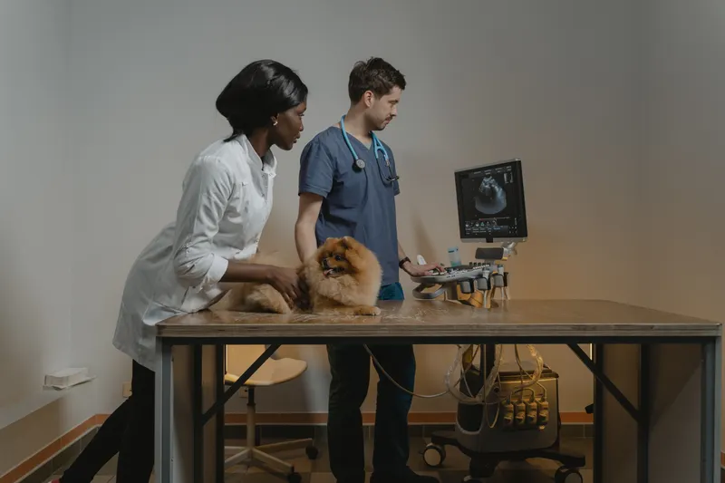

Listado de veterinarios

Veterinarios registrados
| Código | Veterinario | Celular | Días habituales | Acciones |
|---|---|---|---|---|
| V-001 | Dra. Ana Pérez | 0991112233 | Lunes a viernes | |
| V-002 | Dr. Luis Mora | 0992223344 | Lunes, miércoles, viernes y sábado | |
| V-003 | Dra. Sofía Vega | 0993334455 | Martes, jueves y sábado |
Ejemplo: al buscar un registro inexistente no se encontraron coincidencias. Intenta con otro criterio.